5 Plotting in R
It is often useful to visualize data by using plots. R offers many different possibilities to create plots, ranging from simple scatterplots to animated plots, that you can export as gifs or even interactive webapps. The built-in capabilities of R offer many tools, to quickly generate plots and packages like ggplot2 from the tidyverse family offer a full plotting experience built on the so called “Grammar of Graphics”.
5.1 The plot-function
In its simplest form, the plot function in R delivers a scatterplot. In the call below,type = "p" could be omitted as it is the default value if the argument is not provided in the call.
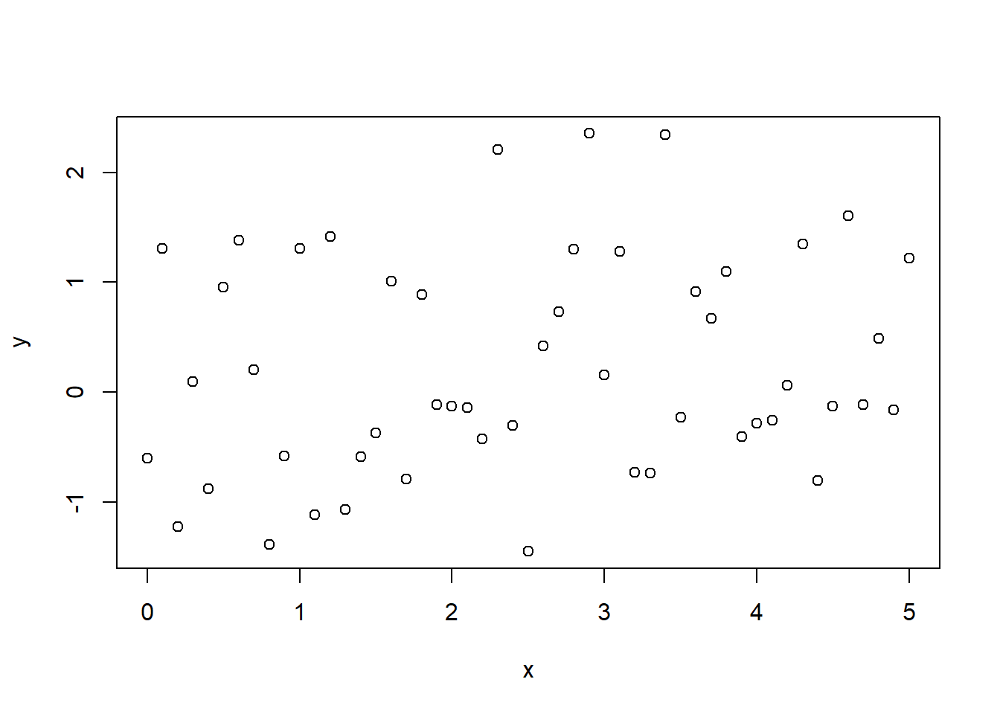
If we instead want a simple line plot or a combination of both, we can specify this behavior using the type argument.
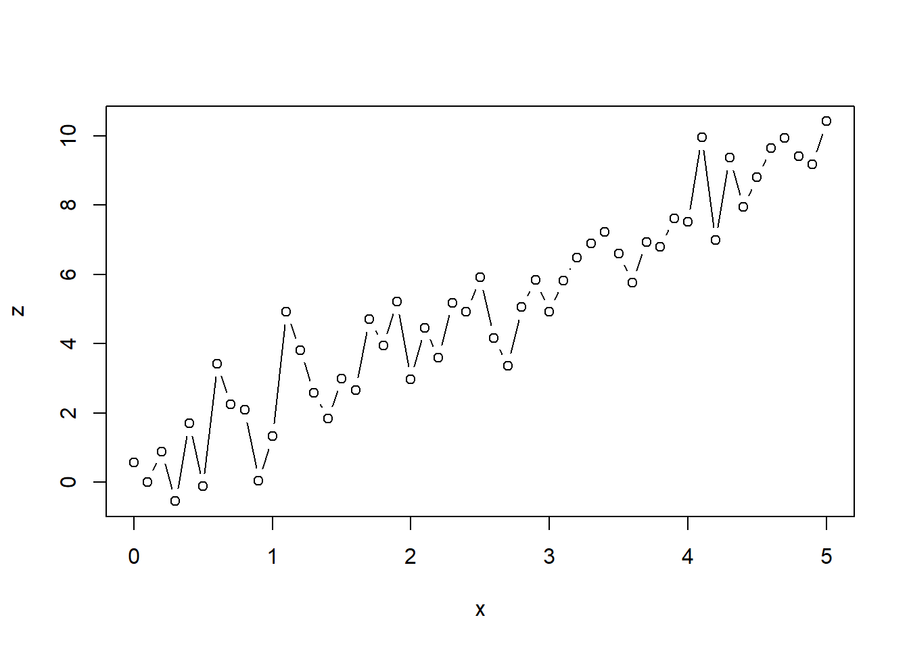
Other arguments to the plot function can be used to specify color, linetype (dashed etc.), linewidth, title, subtitle and many more. The help files ?plot and ?par can be very helpful when trying to achieve a specific look for your plot.
An example could look a little like this:
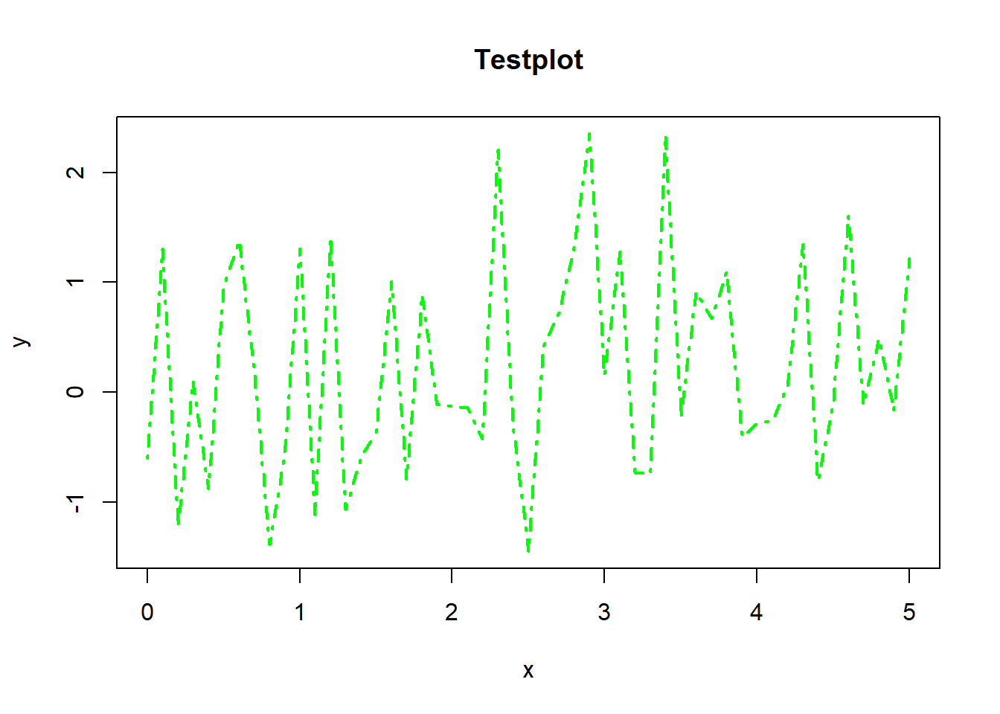
If we want to show multiple things in one diagram it can be useful to plot multiple objects in one coordinate grid.
R provides some ways to do so, the most simple ones being the lines function that works similar to the plot function and the abline function which can be used to add straight lines.
plot(x = x, y = y, type = "p", col = "green")
lines(x = x, y = z, type = "l", lwd = 2, lty = 4, col = "red")
abline(a=0, b=0.5, col = "blue")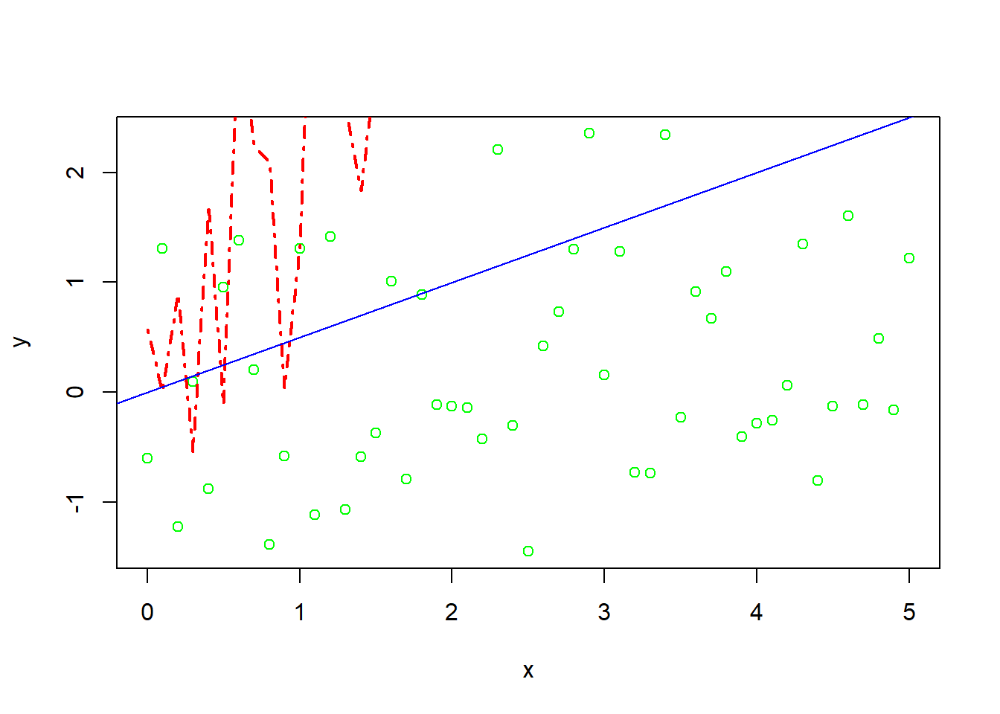
As you may see from this plot, our y-axis is not adjusted to our newly added line. But we have a possibility to manually adjust the range of our axes if we choose to do so. This is done using the xlim and ylim arguments in the original plot function.
plot(x = x, y = y, type = "p", col = "green", xlim = c(0,5), ylim = c(-3, 12))
lines(x = x, y = z, type = "l", lwd = 2, lty = 4, col = "red")
abline(a=0, b=0.5, col = "blue")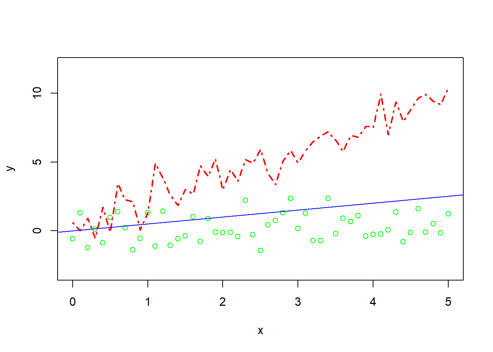
It is also possible to plot functions like sin(x) or the standard normal density.
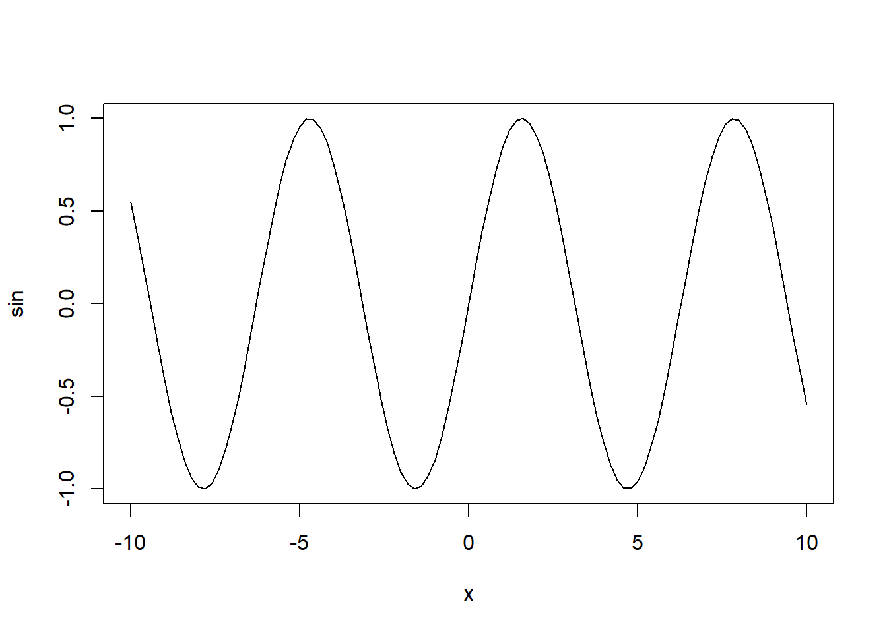
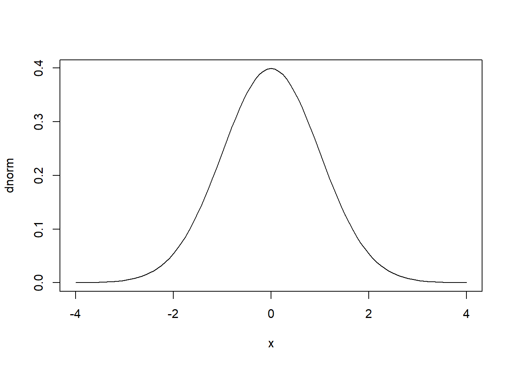
There are many other useful plotting functions that are integrated in base R. We won’t cover all of them here, but instead focus on some of the most frequently needed.
5.2 Histograms and kernel densities
Other useful plotting functions that are offered in the default R experience include histograms with the function hist. With a combination of plot and density we get access to kernel density plots. A kernel density estimator is a nonparametric estimator of density of random variable based on a sample. Details about the estimator are beyond the scope of these notes. In the settings where we will use them, the default choices of the estimator will yield accurate results. Combining our previous knowledge with these possibilities, we can create plots like the following (note: in hist the argument freq = FALSE leads to relative frequency instead of counts. See ?hist for more details.):
x <- rnorm(n = 20)
my_dens <- density(x)
hist(x, freq = FALSE, breaks = seq(-4, 4, 0.5), xlim = c(-4, 4))
lines(my_dens, col = "green", lty = 2, lwd = 2)
lines(x = seq(-4, 4, 0.05), y = dnorm(seq(-4, 4, 0.05)), col = "red", lty = 1)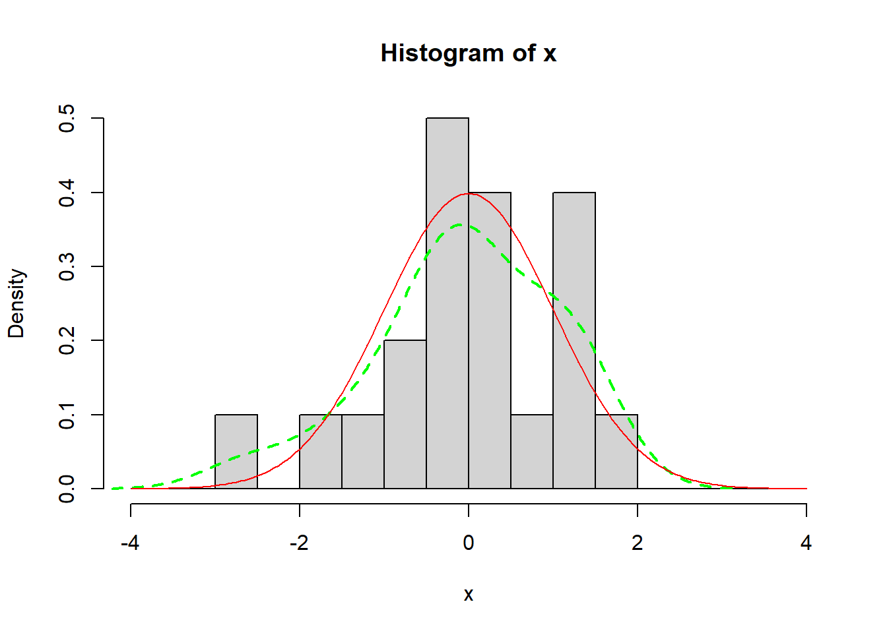
Further functions include barplots:
temperatures <- c(17,23,18,30,32,16,4,-3)
barplot(temperatures,
ylim = c(-15, 35),
main = "Daily Temperature",
ylab = "Degree Celsius")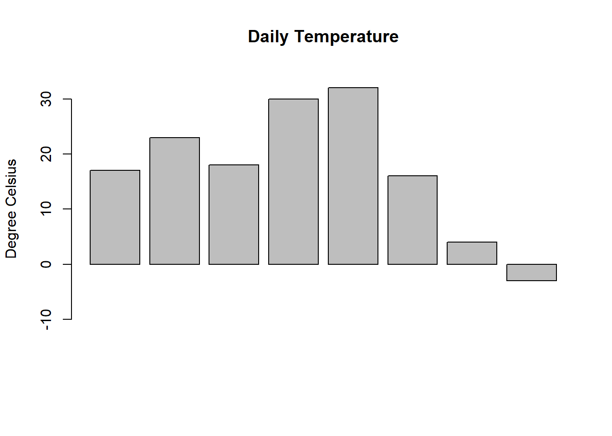
and piecharts:
slices <- c(8, 14, 9, 12, 4)
labels <- c("Apple", "Pumpkin", "Pork", "3.14", "American")
pie(slices, labels = labels, main = "Types of pie")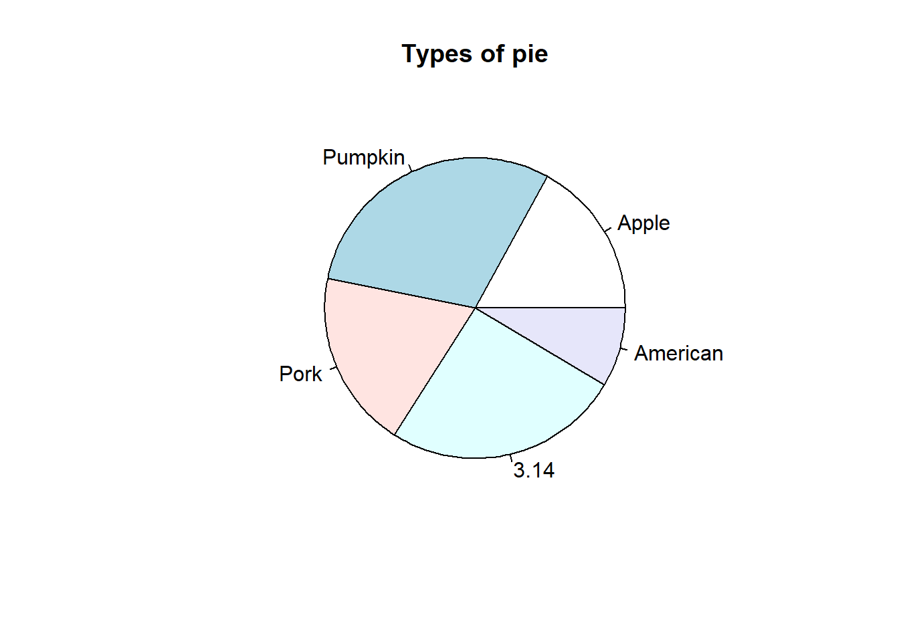
Another important part of plots - like comments in code - is a legible legend. R has built-in support for adding a legend to your plots. Going back to our combined plot from above, one can add a legend as shown in the following example.
Here the x and y arguments specify the position of the legend in the plot and the other arguments specify its contents. Since a legend has to be customized for each plot, one should have a look in the documentation ?legend.
x <- seq(0, 5, 0.1)
y <- rnorm(n = length(x))
z <- 2*x + rnorm(n = 51)
plot(x = x, y = y, type = "p", col = "green", xlim = c(0,5), ylim = c(-3, 12))
lines(x = x, y = z, type = "l", lwd = 2, lty = 4, col = "red")
legend(x = 0, y = 10,
legend = c("My green points", "My red line"),
col = c("green", "red"),
lty = c(1, 4),
lwd = 2)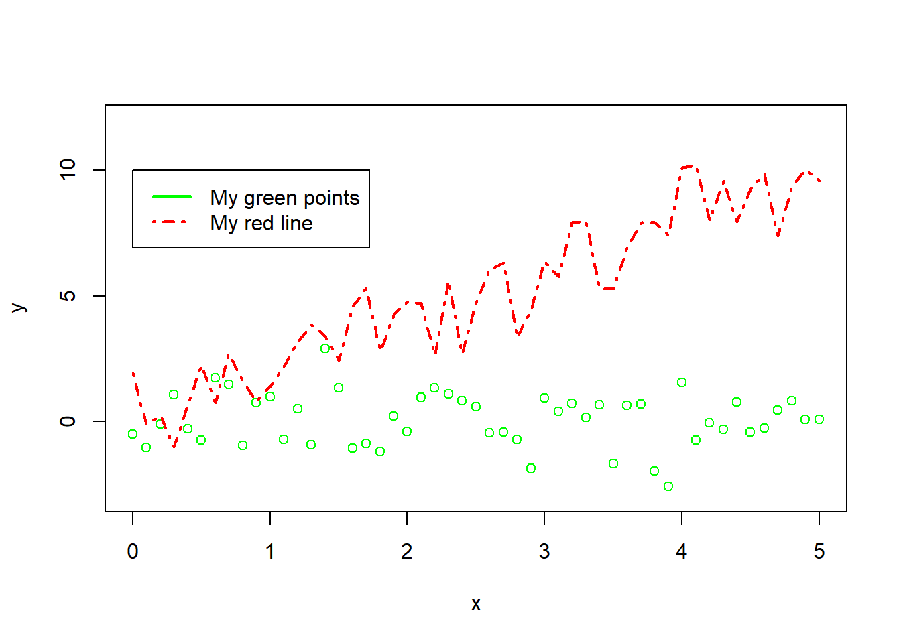
If one decides to pursue a tidyverse approach, the package ggplot allows for beautiful, heavily customized plots. An example can be seen below:
library(ggplot2)
library(ggforce)
library(hrbrthemes)
n = 800
x <- runif(n, min = -10, max = 10)
treatment <- ifelse(x>0,1,0)
y <- 0.2*x + treatment*3 + rnorm(n, mean = 0, sd = 0.6)
visualise.data <- data.frame(x, treatment, y)
p1 <- ggplot(visualise.data, aes(x=x, y=y, colour = treatment == 1)) +
labs(title = "Outcome Variable", y = "outcome variable", x = "assignment variable") +
geom_point() +
geom_mark_ellipse(aes(filter = treatment == 1,
label = 'x \U02265 0')) +
geom_mark_ellipse(aes(filter = treatment == 0,
label = 'x < 0')) +
geom_segment(aes(x = -10, y = -2, xend = 0, yend = 0), color = 'red', size = 1.5) +
geom_segment(aes(x = 0, y = 3, xend = 10, yend = 5), color = 'red', size = 1.5) +
#theme_ipsum(axis_title_size = 18) +
theme(legend.position = "none",
legend.title = element_text(size = 18)) +
scale_colour_brewer(type = 'qual', palette = 'Dark2')
p1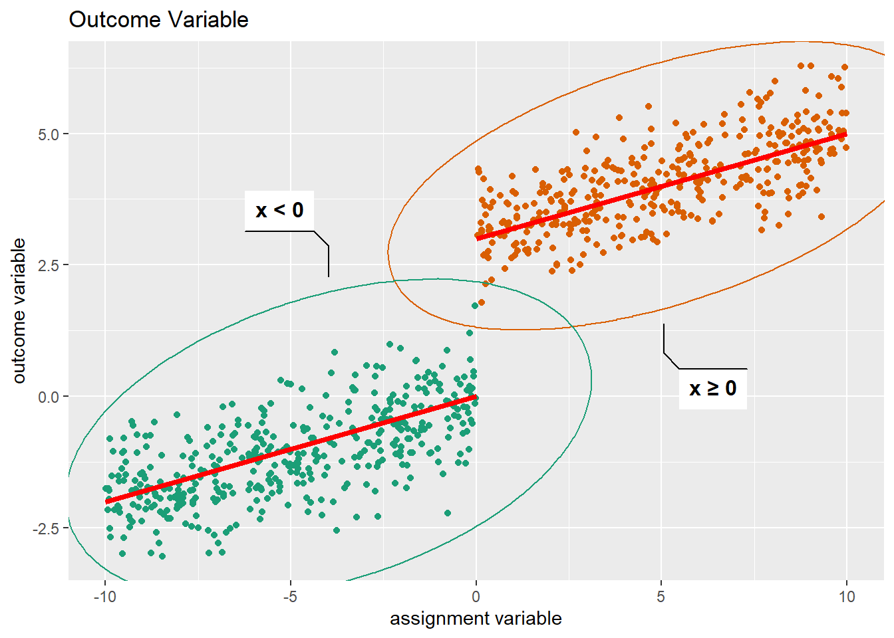
The possibilities of ggplot2 are vast and can be intimidating, but it offers a consistent plotting experience integrated into a tidy data workflow using the tidyverse family of packages.
5.3 Exercises V
Exercise 1:
Draw samples of size 1000 from exponential distributions with varying values of the parameter. Use histograms to visualize differences in the distributions.
Exercise 2:
Take the mtcars dataset that is included in base R and plot mpg (miles per gallon) against wt (weight) as a scatterplot.
Add a red line with abline by eyeballing the parameters that could come out of a regression.
Exercise 3:
Write a function that takes as its arguments a sample size n and a boolean that indicates, if plotting should take place. Let this function return a sample of size n drawn from a standard normal. If the plotting argument was true, let it also plot your sample in a way that seems sensible to you.